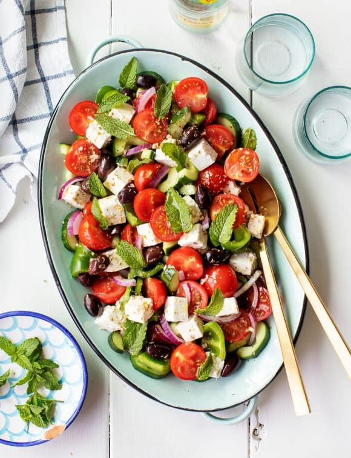

Greek Salad

A description of the dish
Ingredients
- English cucumber, cut lengthwise, seeded, and sliced ¼-inch thick
- 1 green bell pepper, chopped into 1-inch pieces
- 2 cups halved cherry tomatoes
- 5 ounces feta cheese, cut into ½ inch cubes*
- ⅓ cup thinly sliced red onion
- ⅓ cup pitted Kalamata olives
- ⅓ cup fresh mint leaves
Steps
- Make the dressing: In a small bowl, whisk together the olive oil, vinegar, garlic, oregano, mustard, salt, and several grinds of pepper.
- On a large platter, arrange the cucumber, green pepper, cherry tomatoes, feta cheese, red onions, and olives. Drizzle with the dressing and very gently toss. Sprinkle with a few generous pinches of oregano and top with the mint leaves. Season to taste and serve.